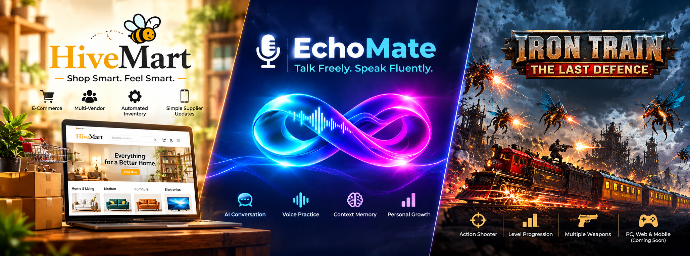

Beyond Syntax: Building Across Three Different Runtimes with AI as a Systems Partner
Why understanding system failure modes, data contracts, and architectural flow matters exponentially more than memorizing syntax in the AI era.

“AI is going to take our jobs.” I hear this take almost every week. I see it differently.
AI hasn’t replaced me. It has given me the architectural leverage to build, experiment with, and ship products that traditionally demanded a much larger engineering team.
Over the past few months, I’ve worked across three very different projects: Hivemart, EchoMate, and IRON TRAIN: THE LAST DEFENCE.
Composable, serverless e-commerce infrastructure without costly SaaS bloat.
Voice-first AI conversation, low-latency audio, and episodic memory distillation.
Unity-based 2D action shooter built with distance-based game state machines.
Different products. Different runtimes. Different engineering challenges. But one principle connects all three:
Understanding how systems work matters more than memorizing every line of syntax.
🧩 1. The Technical Ecosystem: One Developer, Multiple Runtimes
Rather than treating every technology as an isolated skill, I started thinking about each runtime as a specialized component inside a larger distributed system:
Mobile Runtimes (Dart & FlutterFlow)
- Custom widgets, actions, and application state.
- Defensive JSON parsing for dynamic AI payload resilience.
- Debugging client runtimes (e.g.,
NoSuchMethodError).
Backend Orchestration (TypeScript & Deno)
- Supabase Edge Functions for secure API routing.
- Dynamic prompt injection and context window management.
- Upstream AI failure graceful fallback pipelines.
Event Processing (PostgreSQL & PL/pgSQL)
- Relational modeling for profiles, chats, and vector memory.
- Database triggers for event-driven updates.
- JSONB transformations keeping state strictly consistent.
Game Systems (Unity & C#)
- Player controllers, dynamic aiming, and firing physics.
- Distance-based difficulty scaling across 6,000-metre loops.
- Centralized state managers for gameplay, popups, and audio.
🛒 2. Hivemart: E-Commerce Beyond Traditional Apps Visit Hivemart ↗
Hivemart started with a practical operational problem: managing products and supplier inventory without forcing small suppliers to navigate bloated, complex SaaS dashboards.
"If a supplier only needs to change inventory from 12 units to 10, why should they need an entire vendor management platform to do it?"
We engineered a composable architecture uniting Shopify GraphQL APIs, lightweight Liquid sections, and Google Sheets as an operational data layer. The deep challenge wasn't writing code—it was data ownership and concurrency. An inventory update cannot blindly overwrite newer changes caused by live store checkouts.
🎙️ 3. EchoMate: Building a Voice-First AI Companion EchoMate Architecture ↗
EchoMate took me into conversational AI engineering. The goal: a supportive speaking partner that helps Indian professionals overcome hesitation without awkward mid-sentence interruptions.
One of the biggest technical challenges was context distillation: Sending the entire chat history wastes tokens and adds latency. Retaining too little makes conversation feel disconnected. EchoMate pairs a compact rolling message window with structured long-term memory distilled in PostgreSQL.
🚂 4. IRON TRAIN: THE LAST DEFENCE Play on itch.io ↗
In game development, generating an asset or script is only 5% of the battle. An enemy sprite is not an enemy system; a shooting animation is not a shooting mechanic.
Across 6,000-metre looping tracks, distance-based state machines dictate enemy movement (sine waves, zig-zags), weapon unlocking, and difficulty escalation. Building this project reinforced that the real job of an engineer is making disparate subsystems interact harmoniously under real runtime stress.
🧪 5. The Reality Check: AI Is Not Magic
Generating code is often the easiest part. The difficult part begins when that code meets the rest of your production system:
🧠 Three Principles This Journey Has Reinforced
AI can generate code in seconds. Knowing where it belongs, what depends on it, and how it fails is the human differentiator.
Dart, TypeScript, Python, SQL, Liquid, and C# solve distinct problems in distinct environments. Connect them as a unified engine.
Handling partial batch failures, memory token limits, and game loop timing builds the intuition required to question and refine AI output.
The Bottom Line
The advantage isn’t merely knowing how to prompt an AI for syntax. It’s knowing what to architect, how the pieces fit together, where the runtime will break, and how to deliver a reliable product.
Don’t just generate code. Understand the system. Build the product. Debug the reality.